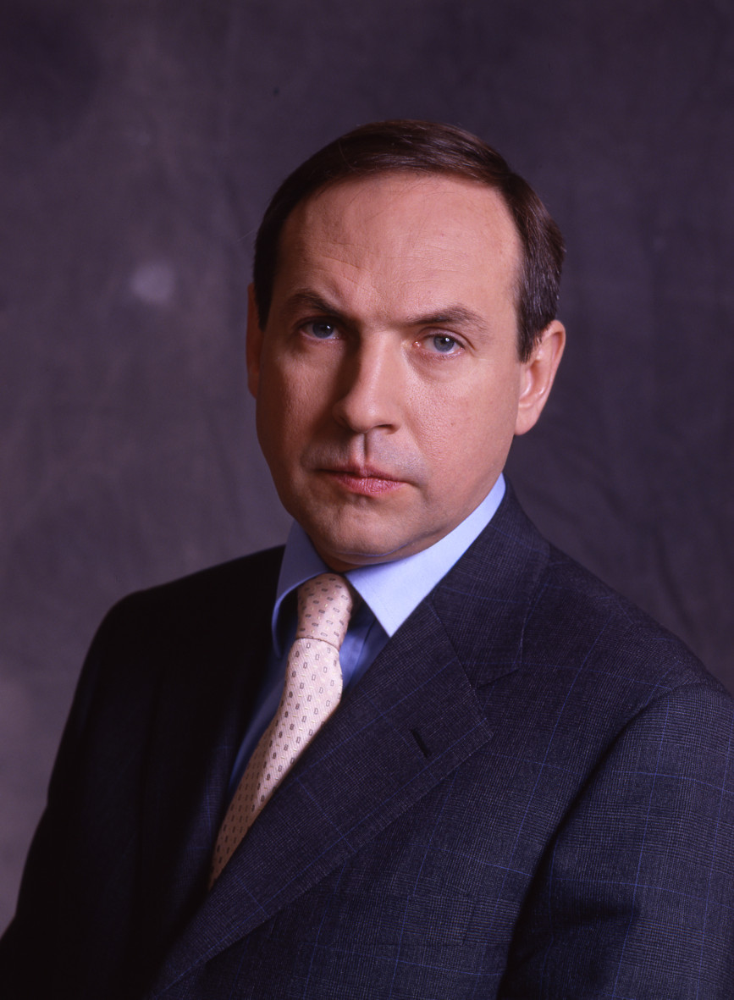

Историк. Депутат. Ведущий. Внук архитектора пакта Молотова–Риббентропа.

Внук Молотова — с фамилией деда в кармане и его методами на экране.
Внук Вячеслава МолотоваФакт — одного из ключевых архитекторов советской внешней политики. В семье — история как живая традиция. Окончил исторический факультет МГУ, аспирантуру, стал кандидатом исторических наук.
Работал в аппарате ЦК КПСС, затем консультировал различные политические структуры в 1990-х. Прошёл путь от советского аппаратчика до «независимого политолога» с нужными связями.
Основал фонд «Политика» — аналитический центр с пропутинским уклоном. Декан факультета государственного управления МГУ. Обложка научного авторитета при политической ангажированности.
Избран депутатом от «Единой России». Возглавил комитет по образованию и науке. Совмещает мандат с телевизионной карьерой.
Активно поддерживает аннексию Крыма, используя исторические аргументы. Его дед подписывал пакт Молотова–Риббентропа, перекраивавший границы Европы. Никонов перекраивает их нарративом.
Программа на Первом канале превращается в витрину официальной позиции по войне — в академической упаковке. Санкции ЕС и Великобритании. Въезд запрещён.
Никонов даёт пропаганде академическую оболочку. Его формат — не крик Соловьёва, а спокойный «разбор» с апелляцией к истории, архивам, прецедентам. Ссылка на деда работает в обе стороны: легитимизирует его авторитет и косвенно нормализует практику перекройки границ как часть «большой истории». Интерпр.
Персональные санкции ЕС с марта 2022 года — за распространение государственной пропаганды и поддержку войны против Украины. Факт Великобритания ввела аналогичные ограничения в том же году. Факт Активы заморожены, въезд запрещён.
Все утверждения в данном досье основаны на открытых публичных источниках. Факты, отмеченные Факт, имеют прямые первичные источники. Отмеченные Интерпр. — авторская интерпретация задокументированных событий.